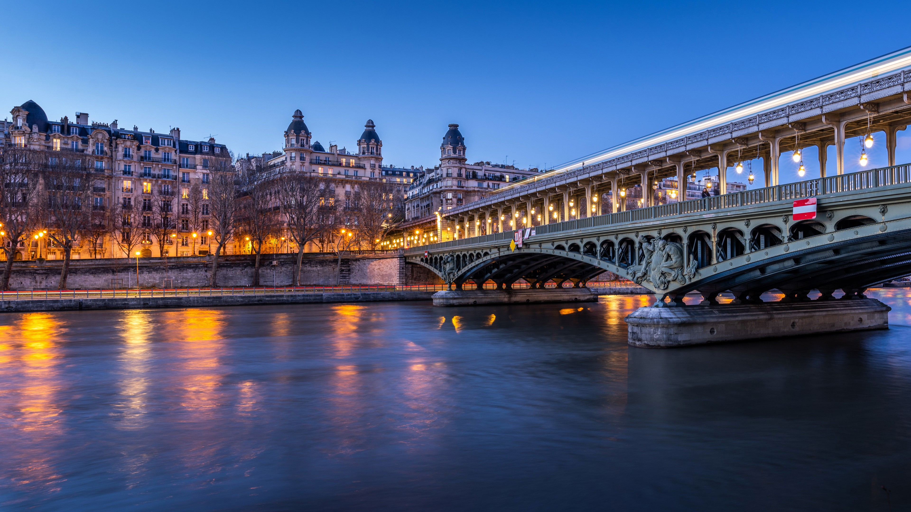
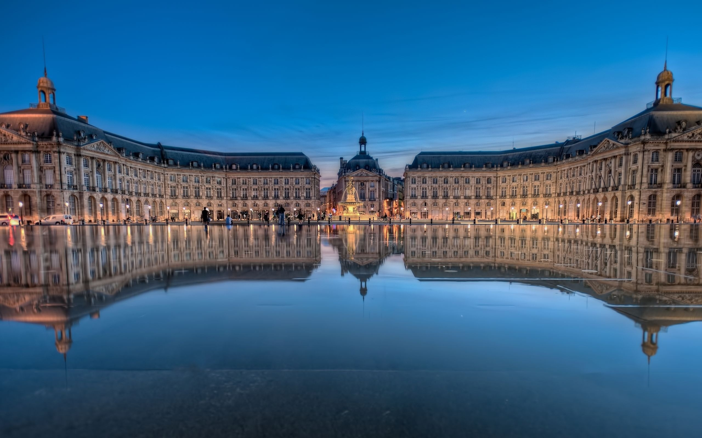
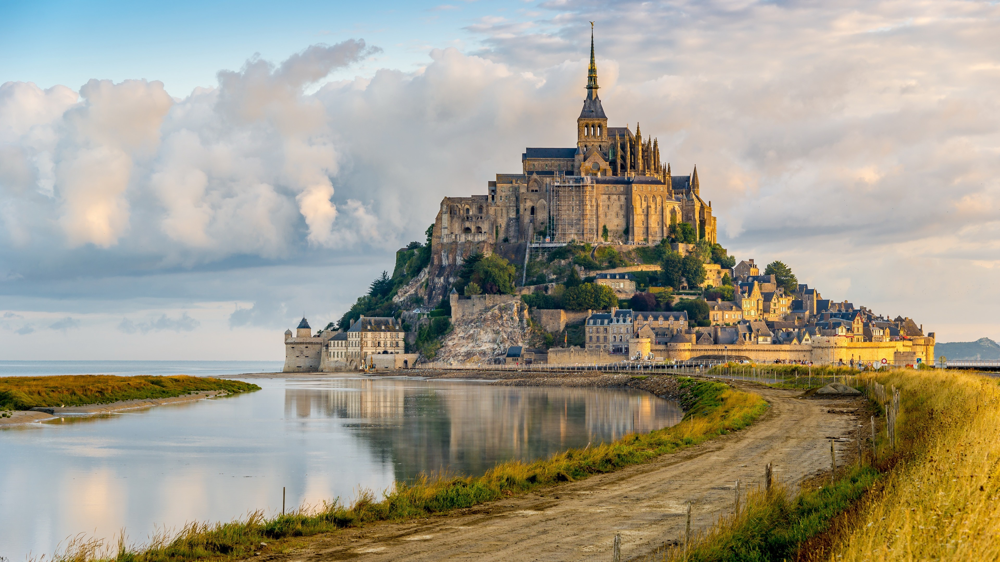
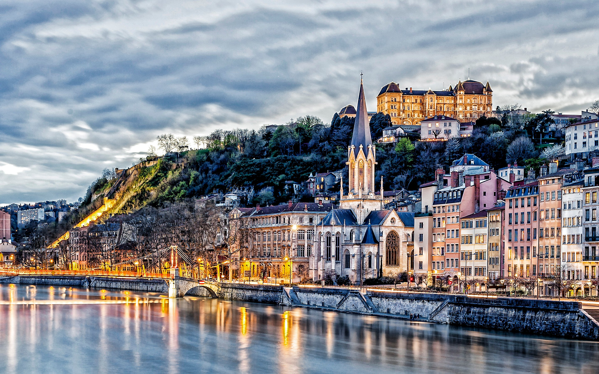

Available Itineraries

Impressions of the Seine & Paris
Sail the Seine and uncover the beauty of Paris and the landscapes that inspired the Impressionists. Visit Monet's home in Giverny and stroll through the enchanting Gardens d'Acquigny. Savor Norman chocolate, cheese, and cider, or explore Le Havre and Rouen by bike. With castles, châteaux, and timeless scenery, this journey is a masterpiece of its own.
Learn More
Grand Seine & Bordeaux
Experience France's art, culture, and cuisine on a 14-night journey along the Seine, Garonne, Dordogne, and Gironde Estuary. Depart Paris for Normandy to visit the D-Day beaches. Explore Monet's Giverny, cycle through the countryside, then head to Bordeaux to savor fine wines and admire landmarks like Blaye Citadel and Cité du Vin.
Learn More
Paris & Normandy
Experience the best of Northern France, from Paris's irresistible charm to Normandy's scenic coastline and rich history. Visit Monet's Gardens and Honfleur, where the Impressionists found their muse. Reflect at the D-Day beaches and the site of Joan of Arc's martyrdom. Explore Château de Bizy and indulge in art, culture, and timeless beauty.
Learn More
Grand Seine & Rhône
Experience the best of France on a journey along the Seine, Saône, and Rhône. Begin in Paris, visit Château Gaillard, and honor history on the Normandy beaches. Explore Rouen before heading to Dijon and savoring Burgundy and Rhône wines. In Lyon, taste culinary delights and walk in Van Gogh's footsteps in Arles.
Learn More
Paris & the Seine
Let the Seine guide you past cozy cafés, quiet quays, and everyday Parisian scenes. Spend time at the Monet museum, learn a classic French recipe, or enjoy some of the city's finest shopping before sailing through the landscapes that inspired the Impressionists.
Learn More